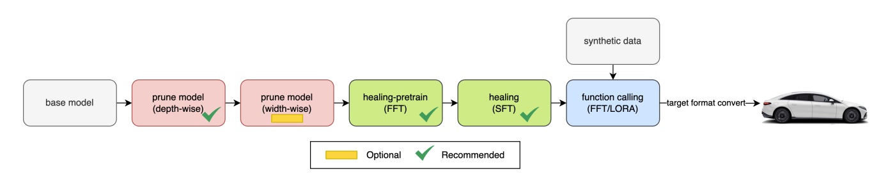
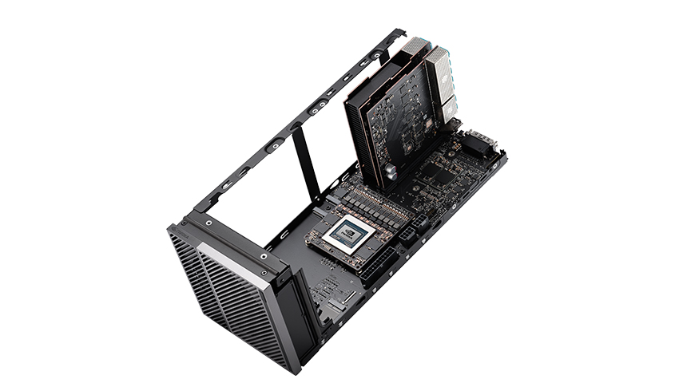

L'architecture des SLM automobiles repose sur des structures de transformateurs (Transformers) hautement optimisées, principalement de type "decoder-only". L'innovation majeure réside dans la capacité de ces modèles à intégrer des modalités multiples (texte, vision, audio) pour créer une compréhension contextuelle de l'habitacle et de l'environnement extérieur. Des modèles comme Phi-3 Mini de Microsoft, Llama-3 de Meta ou Mistral 7B sont devenus les standards de fait pour le développement embarqué. L'architecture logicielle évolue vers des systèmes multi-agents où des agents spécialisés communiquent via des protocoles standardisés pour orchestrer les fonctions du véhicule.
La mise en œuvre de ces SLM locaux requiert une puissance de calcul massive qui transcende les capacités des microcontrôleurs automobiles classiques. Le CES 2025 a mis en exergue l'affrontement titanesque entre les géants des semi-conducteurs : NVIDIA, Qualcomm et MediaTek redéfinissent chacun la chaîne de valeur du silicium embarqué avec des architectures radicalement différentes.
Microsoft s'est imposé comme un acteur incontournable de l'IA périphérique avec sa famille de modèles Phi. Le modèle Phi-3 Mini, doté de seulement 3,8 milliards de paramètres, est conçu comme un "modèle dense en raisonnement" entraîné sur des jeux de données synthétiques et filtrés de qualité "manuel scolaire" (textbook quality), lui permettant de rivaliser avec des modèles 10 à 50 fois plus grands sur des tâches de logique. Cette efficacité permet son exécution sur des processeurs ARM standard ou des NPU dédiés avec une empreinte mémoire réduite. L'évolution de la gamme intègre les modèles Phi-4 (14B paramètres) et Phi-4-multimodal. [1]
L'architecture des SLM intègre désormais des capacités de "function calling" (appel de fonctions) robustes. Plutôt que de simplement générer du texte, le modèle est entraîné à produire des commandes structurées (ex: JSON ou gRPC) pour interagir avec les calculateurs (ECU) du véhicule. Par exemple, une requête utilisateur telle que "J'ai froid, prépare la voiture pour une conduite relaxante" est transformée par le SLM en une série d'appels système : activation du chauffage des sièges, réglage de la température à 22°C et changement de l'éclairage d'ambiance en bleu doux. [2]

Red represents the pruning stages, green for healing, and blue for function-calling alignment.
Une tendance majeure post-CES 2025 est l'émergence des modèles de Vision-Langage-Action (VLA). L'innovation de rupture la plus significative est l'introduction de la fondation ouverte NVIDIA Alpamayo 1, une architecture de 10 milliards de paramètres conçue pour traiter le "long tail" (les événements rares et imprévisibles de la conduite). En analysant les flux vidéo multi-caméras, le modèle génère la trajectoire de conduite ainsi qu'une trace de raisonnement textuelle explicite expliquant chaque décision. Cette architecture permet de passer d'une IA de perception (identifier un objet) à une IA physique capable de planifier et d'agir dans le monde réel. [3]
Les modèles ouverts constituent le socle de l'innovation des équipementiers. La collection Meta Llama 3.2 propose des modèles ultra-légers de 1B et 3B de paramètres spécifiquement taillés pour l'Edge. [4] Parallèlement, la startup européenne Mistral AI a déployé la série Ministral 3 (disponible en 3B, 8B et 14B), dont l'avantage stratégique réside dans son optimisation technique réalisée en collaboration avec NVIDIA, exploitant nativement le framework TensorRT-LLM. [5]
L'interopérabilité de ces modèles est assurée par des frameworks comme ONNX (Open Neural Network Exchange) ou ExecuTorch, permettant de déployer un même modèle sur des cibles matérielles variées (NPU, GPU, DSP) tout en conservant les optimisations spécifiques au silicium.
| Famille de Modèle | Taille (Paramètres) | Caractéristiques Clés |
|---|---|---|
| Microsoft Phi-3/4 | 3.8B – 14B | Excellentes capacités de raisonnement logique, idéal pour le diagnostic |
| Meta Llama-3.1/3.2 | 1B – 8B | Standard industriel, large support communautaire et matériel |
| Mistral / Ministral 3 | 3B – 14B | Performance robuste, support natif pour NVIDIA TensorRT |
| Google Gemma-3 | 4B – 12B | Optimisé pour l'efficacité énergétique sur mobile et Edge |
| NVIDIA Alpamayo 1 | 10B | Modèle VLA (Vision-Langage-Action) pour la conduite autonome raisonnée |
Le matériel embarqué a atteint une puissance de calcul autrefois réservée aux serveurs. L'unité de mesure dominante est le TOPS (Trillions d'Opérations par Seconde), cruciale pour l'inférence en temps réel des SLM multimodaux. NVIDIA avec sa plateforme DRIVE Thor (1 000 TOPS) et Qualcomm avec le Snapdragon Digital Chassis (NPU Hexagon ultra-performant) sont en concurrence pour devenir le cerveau central du véhicule. Ces SoCs (System-on-Chip) intègrent des moteurs de transformateurs matériels dédiés qui accélèrent spécifiquement les couches d'attention des modèles de langage, réduisant drastiquement la consommation électrique.
L'approche de NVIDIA s'inscrit dans la lignée de sa suprématie sur le marché des centres de données IA. Le SoC NVIDIA DRIVE AGX Thor est conçu comme le cerveau omnipotent du véhicule autonome de Niveau 4, basé sur l'architecture Blackwell.
"DRIVE Thor est le super-héros de l'informatique centralisée, offrant des performances fulgurantes pour fournir des superordinateurs sur roues définis par logiciel, continuellement évolutifs et sécurisés."
La plateforme délivre des performances colossales de 1 000 TOPS en calcul entier 8 bits (INT8) et jusqu'à 2 000 TFLOPS en format virgule flottante 4 bits (FP4). Son "Transformer Engine" est une innovation majeure qui permet de traiter les données vidéo comme une trame de perception continue, optimisant l'inférence pour les modèles de vision et de langage. Thor introduit également la précision FP8, permettant de transférer des modèles depuis les environnements d'entraînement sans la perte de précision critique associée aux formats entiers traditionnels.
L'un des différenciateurs structurels critiques du DRIVE Thor est son architecture d'isolation matérielle stricte (Multi-Instance GPU). Le SoC peut partitionner ses ressources physiques pour exécuter simultanément et de manière totalement hermétique des systèmes d'exploitation distincts : QNX pour les systèmes de sécurité critiques certifiés ASIL-D, Linux pour la perception environnementale, et Android pour l'interface utilisateur de l'habitacle. [7] [8]

Qualcomm transpose sa domination de l'écosystème mobile et PC vers l'automobile avec le lancement de ses plateformes de nouvelle génération : Snapdragon Cockpit Elite et Snapdragon Ride Elite. La pierre angulaire de cette évolution matérielle est l'intégration du processeur CPU Oryon de deuxième génération, trois fois plus rapide que la génération précédente.
Toutefois, le véritable moteur de l'AI-Defined Vehicle réside dans l'accélérateur tensoriel. L'unité de traitement neuronal (NPU) Hexagon intégrée à ces SoCs a été intégralement repensée pour l'accélération des réseaux Transformers et de l'IA multimodale, avec un multiplicateur de performance de 12x par rapport aux plateformes Cockpit antérieures. Équipée d'accélérateurs vectoriels et supportant la précision mixte, cette NPU permet de traiter en temps réel les flux provenant de plus de 40 capteurs haute résolution. Qualcomm met l'accent sur "l'IA Agentique", permettant au véhicule de devenir un assistant proactif capable de traiter simultanément l'audio, la vidéo et les données capteurs pour anticiper les besoins des passagers. [9]
MediaTek bouscule le duopole établi en proposant une stratégie hybride hautement collaborative. Lors du CES 2025, la firme a présenté ses plateformes Dimensity Auto Cockpit, notamment la puce C-X1. En intégrant directement la propriété intellectuelle de NVIDIA (GPU Blackwell et AI) au sein de son architecture, MediaTek revendique une puissance de calcul atteignant environ 1 Petaflop en FP4. Cette collaboration est cruciale pour l'émergence des "cockpits unifiés" où l'IA gère l'affichage sur six écrans ou plus, le monitoring du conducteur (DMS) et l'assistance vocale zonée.
L'axe stratégique de MediaTek repose sur l'intégration approfondie de frameworks tiers optimisés pour l'Edge. MediaTek a notamment dévoilé un partenariat majeur avec Cerence AI pour faire tourner le modèle embarqué CaLLM Edge de manière native sur ses puces, avec des barrières de sécurité sémantiques strictes ("smart guardrailing" via NVIDIA NeMo). [10]
| SoC / Plateforme | Performance (TOPS/FLOPS) | Architecture Clé | Fonctions Spécifiques |
|---|---|---|---|
| NVIDIA DRIVE Thor | 1000 INT8 TOPS / 2000 FP4 | Blackwell | Transformer Engine, Multi-domaine |
| Qualcomm Snapdragon Elite | NPU 12x plus rapide | Oryon / Hexagon | IA Agentique, Stack ADAS intégrée |
| MediaTek Dimensity Auto C-X1 | 1 Petaflop FP4 | Blackwell GPU | Cockpit unifié, Support NVIDIA OS |
| Intel Core Ultra 200V | NPU bande passante x2 | XPU stack | Whole-Vehicle Platform, Efficacité ACU |
| AMD Ryzen AI | NPU intégré | NPU LLM Flow | Support ONNX natif pour Phi/Llama |
L'optimisation logicielle est le pont indispensable entre les modèles théoriques et le matériel contraint du véhicule. Le déploiement de modèles comportant des milliards de connexions synaptiques sur un SoC embarqué n'est techniquement viable que grâce à un arsenal d'optimisations logicielles extrêmement pointues : quantification, distillation de connaissances, élagage structurel et décodage spéculatif.
La technique d'optimisation la plus systémique est la quantification : convertir les poids d'un modèle d'une haute précision (FP32) vers une précision inférieure (INT8, INT4). L'architecture Blackwell a introduit le format propriétaire NVFP4 (NVIDIA 4-bit Floating Point), dont le secret réside dans le "Micro-block Scaling" : au lieu d'appliquer un facteur d'échelle grossier, NVFP4 regroupe les tenseurs par petits blocs de 16 valeurs. Selon les données techniques de NVIDIA, ce format réduit l'empreinte mémoire globale du modèle d'un facteur 3,5 par rapport au FP16 et de 1,8 par rapport à l'INT8, tout en maintenant une dégradation de la précision inférieure à 1 % sur les métriques de langage naturel. L'utilisation de formats comme le BFP16 sur les NPU AMD ou Qualcomm assure également une meilleure stabilité lors de l'entraînement local ou du fine-tuning adaptatif. [11]
La distillation de connaissances est un processus où un modèle compact apprend à reproduire le comportement d'un modèle large. Dans l'automobile, cette technique est utilisée pour créer des modèles de 1 à 3 milliards de paramètres capables de gérer l'intégralité du manuel utilisateur d'un véhicule ou les protocoles de maintenance prédictive. L'élagage structurel complète cette approche : l'étude scientifique publiée par les ingénieurs R&D de Mercedes-Benz (arXiv:2501.02342) confirme la viabilité de cette approche en appliquant un élagage en profondeur et en largeur au modèle Phi-3 Mini (3.8B). [2]
"Nous démontrons que, malgré une réduction significative de la taille du modèle, qui supprime jusqu'à 2 milliards de paramètres du modèle d'origine, notre approche préserve les capacités d'appel de fonctions du modèle."
Le modèle résiduel a subi un réentraînement intensif (Full Fine-Tuning et LoRA) sur un jeu de données synthétiques comportant 25 000 exemples d'instructions spécifiques aux fonctions du véhicule. Les résultats illustrent une leçon stratégique cruciale : la compétence hyper-spécialisée visée (le "Function-Calling") non seulement survit à l'amputation de 2 milliards de paramètres, mais s'améliore, écrasant la précision des systèmes vocaux actuellement en production.
| Architecture du Modèle | Paramètres Purgés | Précision "Function-Calling" | Vitesse d'Inférence (NPU) |
|---|---|---|---|
| Ancien système (Règles strictes) | N/A | 0.75 | N/A |
| Phi3-3.8B (Original + LoRA) | 0 | 0.86 | 6.76 tokens/sec |
| Phi3-2.8B (Élagué + SFT + FFT) | ~ 1 Milliard | 0.88 | 9.44 tokens/sec |
| Phi3-1.8B (Élagué + SFT + LoRA) | ~ 2 Milliards | 0.86 | 11.02 tokens/sec |
Pour contourner la limite séquentielle des réseaux Transformers, des frameworks d'inférence avancés intègrent le Décodage Spéculatif, dont l'algorithme de pointe est EAGLE-3. Ce framework utilise le décodage spéculatif EAGLE-3 : un "modèle de brouillon" léger intègre une tête de prédiction autorégressive directement greffée sur le modèle cible pour calculer un arbre de jetons futurs (Draft Tokens), validés ensuite en une seule étape par le modèle cible plus lourd. Les benchmarks démontrent une amélioration du débit d'inférence de 20 % à 35 % sur des batch sizes de 64 à 80, et un multiplicateur de vitesse allant jusqu'à 2,7x dans les régimes à faible latence. [12] [13]
Parallèlement, la capture de graphes CUDA élimine le coût de lancement des noyaux GPU, qui peut représenter 10 à 30 % de la latence totale. En enregistrant l'intégralité du flux d'exécution matériel, le système peut rejouer les opérations avec une latence parfaitement prévisible, une exigence fondamentale pour les systèmes de conduite autonome.
| Technique | Mécanisme | Bénéfice Automobile |
|---|---|---|
| Quantification (INT4/NVFP4) | Réduction de la précision numérique des poids | Empreinte mémoire réduite de 4x à 8x |
| Distillation | Transfert de savoir du Professeur vers l'Élève | Modèles compacts ultra-spécialisés |
| Pruning (Élagage) | Suppression des poids et neurones inutiles | Gain de vitesse, réduction thermique |
| Speculative Decoding (EAGLE-3) | Prédiction parallèle de jetons futurs | Latence perçue divisée par 2 ou 3 |
| CUDA Graphs | Capture et rejeu du flux d'exécution GPU | Latence prévisible, réduction de l'overhead |